청소년상담사-3급(1교시) (2021-10-09 기출문제)
1과목: 발달심리
1. 발달에 관한 설명으로 옳지 않은 것은?
- 발달심리학은 다학문적이다.
- 가소성(plasticity)은 발달의 주요 특성이다.
- 연속성과 불연속성의 쟁점은 양적ㆍ질적 변화의 문제와 관련된다.
- 발달은 역사적ㆍ사회적ㆍ문화적 맥락의 영향을 받는다.
- 전 생애발달 관점에서 발달의 지향점은 성숙이며, 노화의 지향점은 죽음이다.
(정답률: 59%)

2. 발달연구에서 종단적 접근법의 단점에 해당하는 것을 모두 고른 것은?
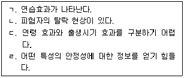
- ㄱ, ㄴ
- ㄴ, ㄷ
- ㄷ, ㄹ
- ㄱ, ㄴ, ㄷ
- ㄴ, ㄷ, ㄹ
(정답률: 30%)
3. 발달 이론에 관한 설명으로 옳은 것은?
- 수퍼(D. Super)의 진로발달 과정에서 자아개념은 중요한 요인이다.
- 에릭슨(E. Erikson)에 의하면 특정 단계의 위기를 해결하지 않고 다음 단계로 진행할 수 없다.
- 프로이드(S. Freud)는 구강기, 항문기, 생식기, 남근기의 순서로 성격 발달이 이루어진다고 주장한다.
- 스턴버그(R. Sternberg)의 삼원지능이론은 분석적ㆍ창의적ㆍ정서적 지능으로 구성된다.
- 콜버그(L. Kohlberg)는 도덕성을 도덕적 행동 측면에서 전인습적ㆍ인습적ㆍ후인습적 수준으로 구분한다.
(정답률: 알수없음)
4. 영아기의 시각발달에 관한 설명으로 옳은 것은?
- 시각은 인간의 감각 중 가장 빨리 발달한다.
- 출생 시부터 신생아는 세상을 흑백으로만 지각한다.
- 팬츠(R. Fantz)의 실험에서 신생아는 곡선보다 직선을 더 선호하는 것으로 나타났다.
- 워크와 깁슨(Walk & Gibson)의 시각벼랑(visual cliff) 실험에서 6∼7개월 된 영아는 깊이를 지각하는 것으로 나타났다.
- 신생아는 움직이는 것보다 정지된 물체를 더 선호한다.
(정답률: 알수없음)
5. 애착에 관한 설명으로 옳지 않은 것은?
- 프로이드(S. Freud)는 구강 만족을 통해 애착을 경험한다고 주장한다.
- 영아의 신호에 대한 양육자의 민감성과 반응성은 애착 형성에 중요하다.
- 애착은 영아와 주양육자 간에 형성되는 친밀한 정서적 유대감이다.
- 회피 애착 유형의 영아는 부모를 갈망하면서 동시에 거부하는 양면성을 보인다.
- 할로우(H. Harlow)는 애착 형성에 신체접촉이 중요하다고 주장한다.
(정답률: 59%)
6. 콜버그(L. Kohlberg)의 성역할 발달 단계를 순서대로 바르게 나열한 것은?
- 성정체성 - 성일관성 - 성안정성
- 성정체성 - 성안정성 - 성일관성
- 성안정성 - 성일관성 - 성정체성
- 성안정성 - 성정체성 - 성일관성
- 성일관성 - 성정체성 - 성안정성
(정답률: 알수없음)
7. 비고츠키(L. Vygotsky)의 언어와 사고에 관한 설명으로 옳은 것을 모두 고른 것은?
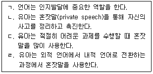
- ㄱ, ㄴ, ㄷ
- ㄱ, ㄴ, ㄹ
- ㄱ, ㄷ, ㄹ
- ㄴ, ㄷ, ㄹ
- ㄱ, ㄴ, ㄷ, ㄹ
(정답률: 59%)
8. 발달 이론가와 청소년기 발달에 관한 주장의 연결로 옳지 않은 것은?
- 설리반(H. Sullivan) - 성ㆍ친밀감ㆍ안전 욕구 간의 충돌로 질풍노도의 시기를 겪는다.
- 프로이드(S. Freud) - 생식기에 해당하고, 이성에 대한 호기심을 가지며 성숙한 성관계 확립을 하는 시기이다.
- 미드(M. Mead) - 혼돈과 곤혹의 시기를 맞아 오랜 기간 동안 갈등과 혼란을 겪는 시기이다.
- 피아제(J. Piaget) - 형식적 조작기에 해당하며, 명제적 사고와 조합적 사고 등이 발달하는 시기이다.
- 홀(S. Hall) - 청소년기의 혼란은 인간이 진화하는 과정에서 나타나는 과도기적 단계에 대한 반영이다.
(정답률: 알수없음)
9. 방어기제에 관한 설명으로 옳은 것은?
- 투사는 충족될 수 없는 무의식적 욕구를 다른 대상을 통하여 충족시키는 것이다.
- 주지화(intellectualization)는 종교, 문학 등의 지적 활동에 몰입함으로써 불안을 회피하려는 것이다.
- 반동형성의 예로는 청소년들이 인기 연예인의 헤어스타일을 모방하는 경우가 있다.
- 치환(displacement)은 자신의 내부에서 용납하기 어려운 욕구나 충동을 남의 탓으로 돌리는 것이다.
- 억압은 자신의 행위나 생각을 정당화하기 위해 그럴듯한 이유를 제시하는 것이다.
(정답률: 42%)
10. 청소년기 자기중심성에 대해 엘킨드(D. Elkind)가 주장한 개념을 모두 고른 것은?
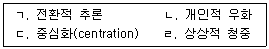
- ㄱ, ㄷ
- ㄱ, ㄹ
- ㄴ, ㄷ
- ㄴ, ㄹ
- ㄴ, ㄷ, ㄹ
(정답률: 59%)
11. 성인기 인지발달에 관한 설명으로 옳은 것은?
- 리겔(K. Riegel)은 형식적 사고에서 실용적 사고로 전환된다고 본다.
- 샤이(K. Schaie)는 문제발견의 단계를 제5단계로 본다.
- 페리(W. Perry)는 이원적 사고에서 상대적 사고로 옮겨 간다고 본다.
- 아르린(P. Arlin)은 성인기부터 변증법적 사고를 한다고 본다.
- 라부비비에(G. Labouvie-Vief)는 인지발달 단계를 습득-성취-책임(실행)-재통합으로 제시한다.
(정답률: 20%)
12. 노년기 발달에 관한 설명으로 옳지 않은 것은?
- 노년기에 일화기억은 의미기억과 달리 연령에 따른 영향을 받지 않는다.
- 에릭슨(E. Erikson)은 8단계인 노년기에 발달되는 바람직한 미덕으로 지혜를 제안한다.
- 레빈슨(D. Levinson)은 노년기를 '다리 위에서의 조망(one's view from the bridge)'이라 표현한다.
- 유리 이론(disengagement theory)에서는 노인과 사회의 상호 철회 과정을 부정적으로 보지 않고 성공적 노화로 본다.
- 활동 이론(activity theory)은 근로자, 부모 등 개인의 역할이 삶에서 만족을 얻을 수 있는 주요 원천으로 본다.
(정답률: 알수없음)
13. 다음 설명에 해당하는 성염색체 이상 증후군은?
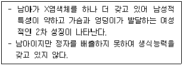
- X결함 증후군
- 터너 증후군
- 클라인펠터 증후군
- XYY 증후군
- 다운증후군
(정답률: 50%)
14. 태내 발달에 관한 설명으로 옳지 않은 것을 모두 고른 것은?
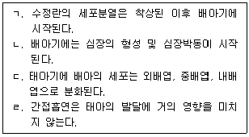
- ㄱ, ㄹ
- ㄴ, ㄷ
- ㄷ, ㄹ
- ㄱ, ㄴ, ㄹ
- ㄱ, ㄷ, ㄹ
(정답률: 알수없음)
15. 뇌와 신경계 발달에 관한 설명으로 옳지 않은 것은?
- 영아는 성인보다 많은 수의 시냅스를 갖고 있다.
- 청소년기보다 영아기에 뇌의 성장 급등이 이루어진다.
- 대뇌 피질의 발달은 영아기 이후에도 진행된다.
- 영아의 뇌는 성인의 뇌보다 가소성이 뛰어나다.
- 뇌의 수초화(myelination)는 두 반구의 기능분화를 의미한다.
(정답률: 50%)
16. 영아기 운동발달에 관한 설명으로 옳은 것은?
- 대체로 다리, 발을 능숙히 사용하기 전에 머리, 목의 통제가 가능하다.
- 운동기술의 발달속도는 개인차가 없다.
- 일반적으로 말단에서 중심 방향으로 발달한다.
- 소근육 운동 기능은 생후 6개월 안에 완성된다.
- 대근육 운동인 기기와 손 뻗기는 영아의 주변 탐색을 가능케 한다.
(정답률: 50%)
17. 피아제(J. Piaget) 이론에서 구체적 조작기의 특성으로 옳은 것을 모두 고른 것은?
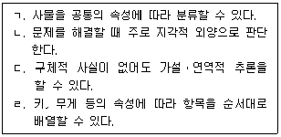
- ㄱ, ㄷ
- ㄱ, ㄹ
- ㄴ, ㄷ
- ㄱ, ㄴ, ㄹ
- ㄴ, ㄷ, ㄹ
(정답률: 47%)
18. 다음 사례에서 나타난 기억전략은?
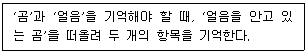
- 정교화
- 조직화
- 시연
- 상위기억(metamemory)
- 개념도
(정답률: 39%)
19. 가드너(H. Gardner)가 주장한 지능이론에 관한 설명으로 옳은 것은?
- 다중지능은 뇌의 동일한 영역과 관련되어 있다.
- 다중지능은 논리적ㆍ언어적ㆍ유동적 지능 3개로 구성되어 있다.
- 다중지능은 여러 개의 독립적인 지능들로 구성되어 있다.
- 자연지능이 높은 사람들은 타인을 공감하는 능력이 뛰어나다.
- 논리수학적 지능이 높은 사람은 모든 다른 지능 영역에서 우수하다.
(정답률: 59%)
20. 친사회적 행동에 관한 설명으로 옳지 않은 것은?
- 정신분석이론에서 친사회적 행동은 초자아의 발달과 관련되어 있다.
- 유아기에서는 타인의 고통을 직접 보지 않고 주로 상상만으로 감정이입을 한다.
- 사회교환이론에 따르면 친사회적 행동으로 인한 손해가 보상보다 클 때 친사회적 행동은 감소한다.
- 이타적 행동은 유아기보다 아동기에 더 많이 발생한다.
- 사회학습이론에 따르면 친사회적 행동에 대한 보상의 관찰은 친사회적 행동을 증진시킨다.
(정답률: 47%)
21. 도덕성 발달 이론에 관한 설명으로 옳은 것을 모두 고른 것은?
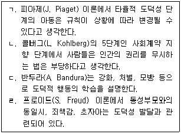
- ㄱ, ㄴ
- ㄱ, ㄹ
- ㄴ, ㄹ
- ㄱ, ㄴ, ㄷ
- ㄴ, ㄷ, ㄹ
(정답률: 알수없음)
22. 다음 설명에 공통적으로 해당되는 개념은?
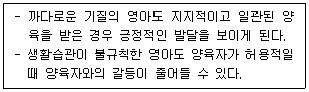
- 습관화
- 민감한 시기
- 기질적 순기능
- 조화의 적합성
- 정서적 사회화
(정답률: 알수없음)
23. DSM-5의 신경발달장애에 해당되지 않는 것은?
- 지적장애
- 의사소통장애
- 반응성 애착장애
- 특정학습장애
- 주의력결핍 과잉행동장애
(정답률: 42%)
24. DSM-5의 선택적 함구증(selective mutism)의 진단기준 및 설명으로 옳은 것은?
- 아동기 때 주로 발병하는 의사소통장애에 해당된다.
- 언어에 대한 지식의 부족으로 말을 하지 않는 것이 아니다.
- 아동기에 흔하게 발병하는 장애로 유병률 5% 이상이다.
- 주로 5세 이후 발병되며, 조기 발견될 가능성이 높다.
- 증상이 최소 6개월 이상 지속되어야 한다.
(정답률: 알수없음)
25. DSM-5의 투렛 장애(Tourett's disorder)의 진단기준으로 옳지 않은 것은?
- 18세 이전에 발병한다.
- 물질의 생리적 효과로 인해 발병되는 것이 아니다.
- 틱(tic) 증상은 자주 악화와 완화를 반복한다.
- 운동성 틱과 음성 틱이 동시에 나타나야만 진단된다.
- 틱 증상은 처음 증상이 시작된 시점부터 1년 이상 지속된다.
(정답률: 59%)
2과목: 집단상담의 기초
26. 청소년 집단상담의 집단응집력에 관한 설명으로 옳지 않은 것은?
- 집단응집력은 그 자체가 강력한 치료적인 힘이다.
- 집단원의 내면세계를 정서적으로 공유하고 집단으로부터 수용되는 것이다.
- 개인상담의 치료적 관계와 유사한 개념이다.
- 집단이 진행되면서 자연스럽게 발달하고 유지된다.
- 집단응집력이 높을수록 출석, 참여, 상호지지의 비율이 더 높아진다.
(정답률: 20%)
27. 집단의 발달과정에 관한 설명으로 옳지 않은 것은?
- 집단의 발달단계는 실제로 중첩되기도 한다.
- 같은 집단 발달단계의 집단원들은 서로 비슷한 속도로 진전을 보인다.
- 집단 과업이 달성된 후에도 새로운 갈등이 일어날 수 있다.
- 다음 단계에 진입해서 정체되기도 하고, 일시적으로 이전 단계로 퇴보하는 경우도 있다.
- 집단은 역동적, 지속적으로 변화하는 특징을 지니고 있다.
(정답률: 59%)
28. 공동지도자 집단의 특징에 관한 설명으로 옳지 않은 것은?
- 지도자의 신체적ㆍ정서적 소진 가능성이 줄어든다.
- 지도자 중 한 명이 역전이가 일어날 때 도움이 된다.
- 지도자 중 한 명은 강한 정서를 표현하는 집단원에 집중하고, 다른 지도자는 나머지 집단원들의 반응에 주목할 수 있다.
- 지도자간의 경쟁과 대립은 집단의 역동을 촉진시킨다.
- 지도자가 다른 지도자에 대항하여 집단원과 한 편을 이루는 단점도 있다.
(정답률: 50%)
29. 코리(G. Corey)가 제시한 작업단계(working stage)에 있는 집단원의 특징을 모두 고른 것은?
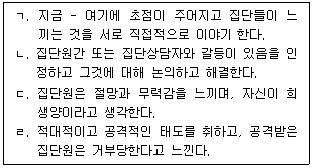
- ㄱ
- ㄱ, ㄴ
- ㄴ, ㄷ
- ㄴ, ㄷ, ㄹ
- ㄱ, ㄴ, ㄷ, ㄹ
(정답률: 42%)
30. 아들러(A. Adler) 집단상담의 목표에 관한 것으로 옳은 것은?
- 억압된 감정을 내보내고 통찰을 제공한다.
- 당면한 문제를 다루기보다 무의식적 갈등을 다루어 성격을 재구성한다.
- 환경과의 접촉 및 자각과 선택의 힘을 증진시킨다.
- 집단원의 자동적 사고를 명료화하고 내담자의 사고방식을 변화시킨다.
- 집단에 대한 소속감을 강화하여 타인과의 일체감과 연대감을 촉진한다.
(정답률: 50%)
31. 얄롬(I. Yalom)의 치료적 요인 중 대인간 학습 - 산출(interpersonal learning – output)에 관한 설명으로 옳은 것을 모두 고른 것은?
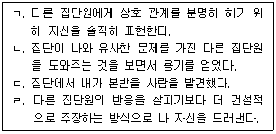
- ㄱ, ㄴ
- ㄱ, ㄹ
- ㄴ, ㄷ
- ㄱ, ㄴ, ㄷ
- ㄴ, ㄷ, ㄹ
(정답률: 10%)
32. 학교현장에서 실시하는 집단상담에 관한 설명으로 옳지 않은 것은?
- 주로 예방 및 발달을 돕는 개입으로 이루어진다.
- 시험불안 감소를 위한 집단 운영도 가능하다.
- 학생이 겪고 있는 심각한 심리적 장애를 치료하는 집단을 운영한다.
- 집단을 통해 이혼가정 자녀들의 불안감소와 학업 수행 능력을 증진시킬 수 있다.
- 학교 관계자에게 집단상담이 학생의 행동 및 정서 변화에 효과적이라는 증거를 제시하는 것이 좋다.
(정답률: 54%)
33. 아동 및 청소년 집단상담자의 바람직한 행동으로 옳은 것은?
- 집단원의 자율성을 위해 집단규칙을 제시할 필요는 없다.
- 매 회기마다 계획된 의제나 주제를 반드시 지켜야 한다.
- 청소년 집단원의 권익을 보호하기 위해 가능하면 부모나 기관에 맞서 청소년의 편을 들어 주어야 한다.
- 아동과 청소년들은 빠른 애착과 분리가 가능하기 때문에 종결 시점을 빨리 알려주지 않아도 된다.
- 학교에서 진행되는 집단상담은 집단 밖으로 비밀이 새어 나가기 쉽다는 점을 민감하게 살펴보아야 한다.
(정답률: 59%)
34. 청소년 집단상담에서 집단원의 의존성을 조장할 위험이 있는 경우에 해당하는 것을 모두 고른 것은?
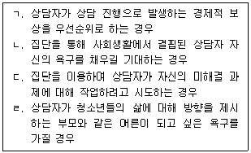
- ㄱ, ㄴ
- ㄷ, ㄹ
- ㄱ, ㄴ, ㄷ
- ㄴ, ㄷ, ㄹ
- ㄱ, ㄴ, ㄷ, ㄹ
(정답률: 42%)
35. 해결중심 집단상담 기법을 나열한 것은?
- 자각, 탈숙고, 정화
- 기적질문, 척도질문, 간접칭찬
- 유머, 빈의자 기법, 대처질문
- 접촉, 생활양식 해석하기, 질문하기
- 역설적 의도, 척도질문, 자기 포착하기
(정답률: 34%)
36. 실존주의 집단상담에 관한 설명으로 옳지 않은 것은?
- 집단의 목표는 자신이 자기 삶의 주인이어야 한다는 자유를 인식하고 수용하는 것이다.
- 집단상황을 집단원이 실제로 살고 기능하는 세계의 축소판으로 본다.
- 집단원간의 관계 문제를 과거 대인관계 역동으로 분석하고 통찰한다.
- 집단원들이 실존적 문제를 나눔으로써 자신을 발견하도록 돕는다.
- 집단원들은 기본적으로 자유로운 존재이기에 자유에 동반되는 책임을 받아들여야 한다.
(정답률: 50%)
37. 코리(G. Corey)의 집단상담 과도기 단계(transition stage)에서 상담자의 개입으로 옳은 것은?
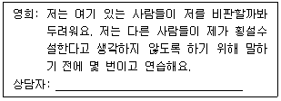
- 언제 그런 두려움을 느꼈고 이 집단에서 누구를 가장 의식하고 있나요?
- 혹시 영희와 같이 비판받을까봐 두려워하는 느낌을 가진 집단원이 있나요?
- 만약 비판받을 것 같은 두려움이 없었다면 이 집단에서 어떻게 달라질 수 있을까요?
- 비판을 두려워하는 자신에게 자기 패배적인 메시지보다는 긍정적으로 표현해 볼 수 있을까요?
- 말하는 것에 주의를 주는 듯한 어머니를 연상하는 사람이 집단 내에 있다면 이야기 나누어 볼 수 있을까요?
(정답률: 알수없음)
38. 다음 대화에서 집단상담자가 사용한 기법은?
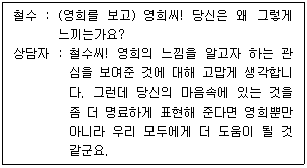
- 공감하기
- 재진술하기
- 질문차단하기
- 조언하기
- 잡담금지
(정답률: 34%)
39. 집단상담 오리엔테이션에 관한 설명으로 옳지 않은 것은?
- 집단원의 집단에 대한 기대를 탐색한다.
- 집단원의 집단참여에 대한 불안감 해소를 돕는다.
- 집단의 저항이 어떻게 처리될 것인지 알려준다.
- 집단에서 이루어지는 작업은 쉽지 않음을 알리고 적극적인 참여를 독려한다.
- 집단원과 함께 집단의 기본규칙에 관하여 논의한다.
(정답률: 59%)
40. 추수(follow-up) 면담에 관한 설명으로 옳은 것을 모두 고른 것은?
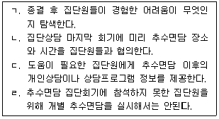
- ㄱ, ㄴ
- ㄷ, ㄹ
- ㄱ, ㄴ, ㄷ
- ㄴ, ㄷ, ㄹ
- ㄱ, ㄴ, ㄷ, ㄹ
(정답률: 39%)
41. 다음의 질문 기법을 주로 사용하는 집단상담자에 관한 설명으로 옳은 것은?
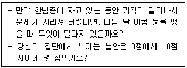
- 집단원의 무책임하고 비효과적인 행동의 근본 원인을 탐색한다.
- 집단원이 자기 삶의 전문가라고 믿고 '알지 못함'(not-knowing)의 자세를 취한다.
- 집단원의 비논리적이고 파국적인 생각을 수정한다.
- 집단에서 표현되지 않은 핵심 갈등을 탐색하고 저항을 다룬다.
- 집단원의 문제를 지속적으로 평가하고 진단한다.
(정답률: 39%)
42. 타의에 의해 집단에 참여하게 된 청소년을 위한 상담자의 행동으로 옳은 것을 모두 고른 것은?
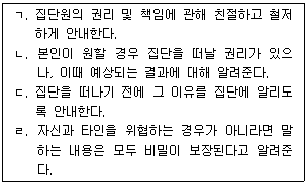
- ㄱ, ㄴ
- ㄴ, ㄹ
- ㄱ, ㄴ, ㄷ
- ㄱ, ㄷ, ㄹ
- ㄴ, ㄷ, ㄹ
(정답률: 34%)
43. 코리(G. Corey)의 집단상담 발달 단계에 따른 집단상담자 역할을 순서대로 나열한 것은?
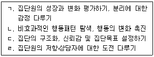
- ㄴ - ㄱ - ㄹ – ㄷ
- ㄴ - ㄹ - ㄷ – ㄱ
- ㄷ - ㄴ - ㄱ - ㄹ
- ㄷ - ㄹ - ㄱ – ㄴ
- ㄷ - ㄹ - ㄴ - ㄱ
(정답률: 50%)
44. 다음의 집단상담 기술을 사용할 때 주의할 점으로 옳지 않은 것은?
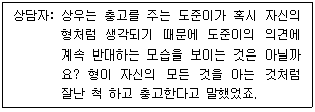
- 정중하고 사려 깊게 한다.
- 구체적인 변화 절차를 계획하고 실행하도록 돕는다.
- 집단원이 받아들일 준비가 되어 있는지 확인한 후에 사용한다.
- 집단원의 지적능력을 고려하여 사용한다.
- 잠정적인 가설이나 질문의 형태로 표현한다.
(정답률: 39%)
45. 청소년 집단상담에서 밑줄 친 상담자 반응으로 옳은 것은?
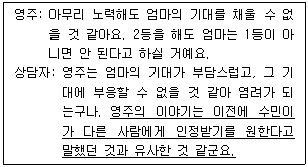
- 공감
- 연결하기
- 차단하기
- 재진술
- 요약
(정답률: 59%)
46. 집단상담에서 바람직하다고 생각되는 집단원의 행동을 모두 고른 것은?
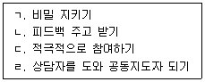
- ㄱ, ㄹ
- ㄴ, ㄷ
- ㄱ, ㄴ, ㄷ
- ㄴ, ㄷ, ㄹ
- ㄱ, ㄴ, ㄷ, ㄹ
(정답률: 50%)
47. 정신분석 집단상담에 참여한 영수의 경험을 설명하는 용어로 옳은 것은?
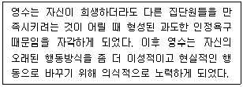
- 합리화
- 전이
- 훈습
- 문제의 외재화
- 주지화
(정답률: 알수없음)
48. 우볼딩(R. Wubbolding)의 현실치료 집단상담 절차에 따라 집단상담자의 질문을 순서대로 나열한 것은?
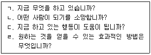
- ㄱ - ㄴ - ㄷ – ㄹ
- ㄱ - ㄴ - ㄹ – ㄷ
- ㄱ - ㄹ - ㄷ -ㄴ
- ㄴ - ㄱ - ㄷ – ㄹ
- ㄴ - ㄱ - ㄹ - ㄷ
(정답률: 42%)
49. 집단상담의 유형별 장단점에 관한 설명으로 옳지 않은 것은?
- 개방집단은 집단원의 변동이 가능하므로 폐쇄집단보다 다양한 사람들과 상호작용할 수 있다.
- 동질집단에서는 이질집단보다 빨리 자기개방이 이루어지고 유대감이 형성될 수 있다.
- 마라톤집단에서는 며칠 동안 집중 회기를 통해 심화된 상호작용이 활성화될 수 있다.
- 비구조화집단은 집단의 목표, 과제, 활동방법을 미리 정해놓아서 구조화집단보다 깊은 수준의 경험이 가능하다.
- 폐쇄집단은 일부 집단원이 중도에 탈락할 경우 집단 크기가 너무 작아질 염려가 있다.
(정답률: 50%)
50. 인간중심 집단상담자에 관한 설명으로 옳은 것을 모두 고른 것은?
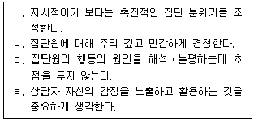
- ㄱ, ㄴ
- ㄷ, ㄹ
- ㄱ, ㄴ, ㄷ
- ㄴ, ㄷ, ㄹ
- ㄱ, ㄴ, ㄷ, ㄹ
(정답률: 알수없음)
3과목: 심리측정 및 평가
51. 심리측정에 관한 설명으로 옳지 않은 것은?
- 물리적 특성에 비해 심리적 특성의 측정이 더 정밀하다.
- 심리적 구성개념에 대한 측정은 간접적인 방법을 이용한다.
- 심리검사는 조작적 정의를 통해 구성개념과 관련된 행동의 일부를 측정하는 것이다.
- 심리적 구성개념은 이론적이고 가설적인 개념이다.
- 검사의 종류에 따라 동일한 구성개념도 측정 결과가 다를 수 있다.
(정답률: 42%)
52. 문항분석에 관한 설명으로 옳은 것을 모두 고른 것은?
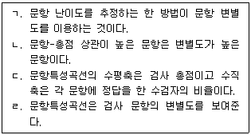
- ㄱ, ㄴ
- ㄱ, ㄷ
- ㄱ, ㄴ, ㄹ
- ㄴ, ㄷ, ㄹ
- ㄱ, ㄴ, ㄷ, ㄹ
(정답률: 알수없음)
53. 준거참조검사에 관한 설명으로 옳은 것을 모두 고른 것은?
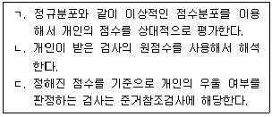
- ㄱ
- ㄱ, ㄴ
- ㄱ, ㄷ
- ㄴ, ㄷ
- ㄱ, ㄴ, ㄷ
(정답률: 42%)
54. 규준에 관한 설명으로 옳은 것은?
- 스테나인 점수 5에 해당하는 백분율은 20 %이다.
- 평균 50점, 표준편차 10점인 정규분포에서 원점수 30점에 해당하는 T점수는 20이다.
- 백분위가 높을수록 그 개인의 원점수는 낮아진다.
- 백분위 점수는 등간척도이다.
- 편차 IQ는 집단 간 규준에 해당한다.
(정답률: 알수없음)
55. 척도에 관한 설명으로 옳은 것은?
- 토익(TOEIC)시험의 점수는 비율척도의 한 사례이다.
- 시속(km/h)은 등간척도에 해당한다.
- 대부분의 심리검사는 비율척도에 해당한다.
- 등간척도는 선형변환이 가능하다.
- 서열척도는 연속변수이다.
(정답률: 42%)
56. 심리검사의 척도구성법에 해당하지 않는 것은?
- 리커트(R. Likert)의 누적평정법(Method of summated rating)
- 써스톤(L. Thurstone)의 등현간격법(Method of equal appearing intervals)
- 모레노(J. Moreno)의 사회성측정법(Sociometry)
- 가트만(L. Guttman)의 척도분석법(Method of scale analysis)
- 오스굿(C. Osgood)의 의미판별법(Semantic differential technique)
(정답률: 알수없음)
57. 신뢰도에 관한 설명으로 옳지 않은 것은?
- 신뢰도는 측정의 일관성 문제와 관련된다.
- 짝진 임의 배치법은 반분신뢰도를 구할 때 쓰는 방법이다.
- 검사-재검사 신뢰도는 검사점수의 안정성에 대한 지표이다.
- 동형검사신뢰도는 검사-재검사 신뢰도의 측정시기의 차이에 따른 문제점을 보완해 준다.
- 반분법은 신뢰도를 과대평가하는 경향이 있다.
(정답률: 42%)
58. 신뢰도에 영향을 주는 요인에 관한 설명으로 옳은 것은?
- 신뢰도는 문항 난이도의 영향을 받지 않는다.
- 문항의 내용이 동질적일수록 신뢰도는 높아진다.
- 측정오차가 클수록 신뢰도는 높아진다.
- 검사-재검사 신뢰도는 검사 시행의 시간 간격이 클수록 높아진다.
- 신뢰도는 검사 문항 수의 영향을 받지 않는다.
(정답률: 알수없음)
59. 요인분석을 통해 검증할 수 있는 타당도는?
- 예언타당도(predictive validity)
- 공인타당도(concurrent validity)
- 내용타당도(content validity)
- 안면타당도(face validity)
- 구인타당도(construct validity)
(정답률: 알수없음)
60. 타당도에 관한 설명으로 옳은 것은?
- 내용타당도와 안면타당도는 동일한 타당도이다.
- 예언타당도는 구인타당도에 해당한다.
- 수렴타당도는 준거 관련 타당도에 해당한다.
- 안면타당도에서 문항의 적절성 판단은 주로 수검자의 평가로 이루어진다.
- 공인타당도는 검사 실시 후 일정시간이 지난 후 평가하는 타당도이다.
(정답률: 알수없음)
61. 객관적 검사와 비교해서 투사적 검사에 관한 설명으로 옳지 않은 것은?
- 검사자극이 모호하다.
- 수검자가 자신의 반응을 방어하기 쉽다.
- 실시와 채점이 덜 용이하다.
- 수검자의 반응이 사회적 바람직성의 영향을 덜 받는다.
- 타당성이 충분히 입증되지 않았다.
(정답률: 42%)
62. 지능검사의 표준점수 해석에 관한 설명으로 옳지 않은 것은?
- 지표점수 115는 백분위 84에 해당한다.
- 지표점수 95는 전체 지능지수 95와 동일한 상대적 위치이다.
- 소검사 환산점수 8은 지표점수 110과 동일한 상대적 위치이다.
- 전체 지능지수 85와 소검사 환산점수 7은 백분위 16에 해당한다.
- 일반능력 지표점수 100은 소검사 환산점수 10과 동일한 상대적 위치이다.
(정답률: 알수없음)
63. 지능의 개념과 구성에 관한 설명으로 옳지 않은 것은?
- 카텔(R. Cattell)은 결정성 지능이 두뇌 손상에 더 취약하다고 하였다.
- 스피어만(C. Spearman)은 모든 인간이 공통적으로 갖고 있는 일반(g)요인을 주장하였다.
- 써스톤(L. Thurstone)은 지능의 다요인설인 기본적인 정신능력(PMA)을 주장하였다.
- 길포드(J. Guilford)는 지능의 구조를 3차원 모델로 구성하였다.
- 가드너(H. Gardner)는 지능의 다요인설을 확장시켜 다중지능이론을 주장하였다.
(정답률: 20%)
64. K-WISC-IV와 비교해서 K-WISC-V에 관한 설명으로 옳지 않은 것은?
- 언어이해 핵심소검사가 2개로 축소되었다.
- 처리속도 핵심소검사는 그대로 유지되었다.
- 시각공간 핵심소검사가 토막짜기와 공통그림찾기로 구성되었다.
- 작업기억 핵심소검사가 숫자와 그림폭으로 구성되었다.
- 지각추론지수가 시각공간 지수와 유동추론 지수로 분리되었다.
(정답률: 42%)
65. 한국판 베일리 영유아발달검사(BSID-II)에 관한 설명으로 옳지 않은 것은?
- 인지 및 행동 등 발달 수준을 평가하는 데 사용된다.
- 인지척도, 동작척도, 정서척도로 구성되어 있다.
- 생후 1개월부터 42개월 영유아를 대상으로 한다.
- 동작척도는 소근육과 대근육 운동수준 등을 평가한다.
- 인지척도는 기억력과 문제해결능력 등을 평가한다.
(정답률: 31%)
66. BGT-2에 관한 설명으로 옳은 것을 모두 고른 것은?
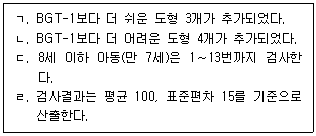
- ㄱ, ㄷ
- ㄱ, ㄹ
- ㄴ, ㄷ
- ㄴ, ㄹ
- ㄷ, ㄹ
(정답률: 알수없음)
67. MMPI-2 척도에 관한 설명으로 옳은 것은?
- S: 건강염려와 관련된 스트레스 정도를 평가한다.
- Pt: 과도한 걱정이나 긴장을 평가한다.
- Pd: 신경쇠약이나 강박정도를 평가한다.
- Pa: 심인성 감각장애 정도를 평가한다.
- Ma: 남성성-여성성 정도를 평가한다.
(정답률: 34%)
68. MMPI-2 내용척도에 관한 설명으로 옳지 않은 것은?
- ANG: 통제력 및 성급함 정도를 평가한다.
- ANX: 일반화된 불안 및 걱정을 평가한다.
- SOD: 냉소적, 불신, 의심 정도를 평가한다.
- HEA: 다양한 신체증상 정도를 평가한다.
- OBS: 반추 및 의사결정 곤란 정도를 평가한다.
(정답률: 알수없음)
69. 성격평가질문지(PAI) 척도에 관한 설명으로 옳은 것은?
- INF: 부주의하거나 무선적인 반응태도를 확인하는 척도
- PIM: 나쁜 인상을 주려는 태도를 확인하는 척도
- DOM: 타인에 대한 공격성을 확인하는 척도
- WRM: 직업 관련 수행을 평정하는 척도
- ANT: 대인관계에서 공감 정도를 평정하는 척도
(정답률: 34%)
70. 청각적 주의력을 평가할 수 있는 신경심리검사를 모두 고른 것은?
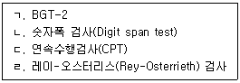
- ㄱ, ㄴ
- ㄱ, ㄷ
- ㄴ, ㄷ
- ㄴ, ㄹ
- ㄷ, ㄹ
(정답률: 알수없음)
71. MBTI에 관한 설명으로 옳지 않은 것은?
- 네 가지 차원을 기본 축으로 구성하였다.
- E/I 축은 에너지를 얻는 근원에 관한 설명이다.
- S/N 축은 정보를 수집하는 방법에 관한 설명이다.
- T/F 축은 영감과 내적인 인식에 관한 설명이다.
- J/P 축은 판단과 인식에 관한 설명이다.
(정답률: 알수없음)
72. 홀랜드(J. Holland)의 진로탐색검사에 관한 설명으로 옳지 않은 것은?
- C와 E의 유사성은 I와 S의 유사성보다 높다.
- RA형은 RS형보다 일관성이 낮다.
- 일치성은 성격 유형과 직업환경 유형 간 유사한 정도를 나타낸다.
- 기업적 유형은 개인의 위치가 분명하고 권력의 위계가 잘 구조화된 직업 환경을 선호한다.
- 변별성이 높은 사람은 일에 있어 경쟁력과 만족도가 높다.
(정답률: 50%)
73. 문장완성검사에 관한 설명으로 옳지 않은 것은?
- 갈톤(F. Galton)의 자유연상검사가 출발점이다.
- TAT보다 더 구조화되어 있다.
- 로터(J. Rotter)는 단어연상검사 방법을 최초로 고안하였다.
- 부, 모, 대인관계 태도 영역을 선택하여 실시할 수 있다.
- 삭스(J. Sacks)의 문장완성검사는 가족, 성, 대인관계, 자기개념 영역으로 구성된다.
(정답률: 알수없음)
74. 로샤(Rorschach)검사에서 조직(Z)점수 채점에 관한 설명으로 옳은 것을 모두 고른 것은?
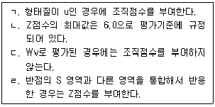
- ㄱ, ㄴ
- ㄱ, ㄷ
- ㄴ, ㄷ
- ㄴ, ㄹ
- ㄷ, ㄹ
(정답률: 34%)
75. TAT에 관한 설명으로 옳지 않은 것은?
- 그림자극이 모호하다는 것이 검사의 특징이다.
- 개인의 욕구는 동일시한 인물을 통해 투사된다.
- 제시된 자극에 개인의 경험이 추가되면서 반응차이를 보인다.
- 개인의 내적욕구가 환경적 압력과 상호작용하여 외부로 표출된다.
- 그림자극에 대한 투사과정의 이론적 전제는 통각, 내현화, 정신 결정론이다.
(정답률: 34%)
4과목: 상담이론
76. 중다양식치료의 개념과 청소년 문제의 연결이 옳지 않은 것은?
- A - 불안, 우울
- B - 싸움, 훔치기
- C - 낮은 자아개념, 지나친 공상
- D - 담배, 술
- S - 두통, 현기증
(정답률: 34%)
77. 인지왜곡의 유형과 예시의 연결이 옳은 것을 모두 고른 것은?
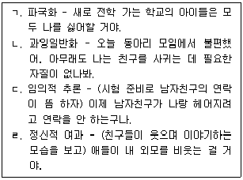
- ㄱ, ㄴ
- ㄷ, ㄹ
- ㄱ, ㄴ, ㄷ
- ㄴ, ㄷ, ㄹ
- ㄱ, ㄴ, ㄷ, ㄹ
(정답률: 34%)
78. 바람직하지 않은 행동을 감소시키는 행동주의 상담의 기법으로 옳은 것을 모두 고른 것은?
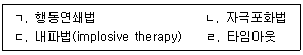
- ㄱ, ㄷ
- ㄴ, ㄹ
- ㄱ, ㄴ, ㄷ
- ㄴ, ㄷ, ㄹ
- ㄱ, ㄴ, ㄷ, ㄹ
(정답률: 34%)
79. 다음 상담자 반응에 해당하는 해결중심 상담의 질문기법은?
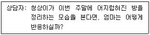
- 예외질문
- 대처질문
- 역설질문
- 평가질문
- 관계성질문
(정답률: 알수없음)
80. 접수면접에 관한 설명으로 옳지 않은 것은?
- 상담경력이 많은 전문가가 담당하는 것이 바람직하다.
- 접수면접 전에 반드시 심리검사를 실시한다.
- 상담자 수가 많고 규모가 큰 기관에서 주로 실시한다.
- 접수면접 후 내담자의 문제유형, 심각성, 긴급성 등을 고려하여 적합한 상담자와 연결한다.
- 기관 또는 상담자가 내담자에게 도움을 줄 수 없는 경우, 연계 계획을 세울 수 있다.
(정답률: 59%)
81. 다음 내담자에게 해당하는 프로차스카와 디클레멘티(J. Prochaska & C. DeClemente)의 범이론적 변화단계모델 단계는?
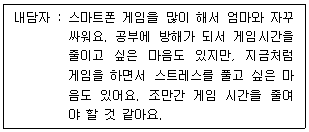
- 준비단계(preparation)
- 행동실천단계(action)
- 숙고단계(contemplation)
- 유지단계(maintenance)
- 불일치단계(discrepancy)
(정답률: 42%)
82. 상담 초기단계의 개입으로 옳지 않은 것은?
- 내담자와 합의하여 구체적인 상담목표를 정한다.
- 내담자의 부적응적 패턴을 직면한다.
- 내담자가 경험하는 어려움을 구체적으로 파악한다.
- 내담자의 말을 경청하고 공감적으로 이해한다.
- 상담기록, 보존, 관리에 대해 내담자의 동의를 구한다.
(정답률: 50%)
83. 직면에 관한 설명으로 옳은 것을 모두 고른 것은?
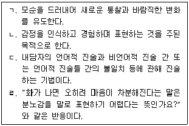
- ㄱ, ㄷ
- ㄴ, ㄹ
- ㄷ, ㄹ
- ㄱ, ㄴ, ㄷ
- ㄱ, ㄷ, ㄹ
(정답률: 31%)
84. 다음 사례에 대한 상담자의 재진술 반응으로 옳은 것은?
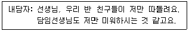
- 친구들이 너만 따돌리고 담임선생님도 너만 미워한다는 말이구나.
- 선생님도 예전에 따돌림을 당한 적이 있었는데 그때 많이 힘들었단다.
- 친구들이 너만 따돌린다는 말이 무슨 말인지 좀 더 이야기해 줄 수 있겠니?
- 담임선생님이 어떻게 하실 때 너를 미워한다고 생각하는지 궁금하구나.
- 친구들이 따돌리지 않고 담임선생님도 너에게 관심을 가져 주었으면 좋겠는데 그렇지 않아서 속상했겠다.
(정답률: 59%)
85. 수용전념치료(ACT)의 핵심 원리로 옳지 않은 것은?
- 가치 탐색
- 전념 행동
- 현재에 머무르기
- 인지적 탈융합
- 역할 변화
(정답률: 34%)
86. 합리정서행동 상담에 관한 기술로 옳지 않은 것은?
- 인간은 합리적인 동시에 비합리적인 존재이다.
- 행동변화의 지속을 위해서 장기상담을 지향한다.
- 상담자는 지시적이고 적극적인 역할을 수행한다.
- 특정 장애의 원인을 구체적으로 제시하지 않는다.
- '내가 원하는 대로 일이 풀리지 않는 것은 끔찍하다.' 는 비합리적 신념이다.
(정답률: 알수없음)
87. 해결중심 상담자의 개입으로 옳지 않은 것은?
- 문제행동과 관련된 과거 경험을 탐색한다.
- 내담자의 장점과 자원을 확인하고 지지한다.
- 내담자가 원하는 것을 상담목표로 설정한다.
- 상담에 오기 전 변화에 대해 질문한다.
- 고객형 내담자에게 관찰 또는 행동 과제를 부여한다.
(정답률: 50%)
88. 현실치료에 관한 설명으로 옳은 것은?
- 의학적 모델에 기초한다.
- 생존의 욕구는 신뇌에서 유발된다.
- 내담자의 과거 또는 미래 행동에 초점을 맞춘다.
- 기본욕구는 상호갈등적이고 대인갈등적이다.
- 전행동(total behavior) 중 행동하기와 느끼기는 직접적으로 통제할 수 있다.
(정답률: 알수없음)
89. 정신분석에 관한 설명으로 옳지 않은 것은?
- 인간은 과거 경험에 영향을 받는 존재이다.
- 인간에 대한 결정론적 입장을 취한다.
- 무의식은 행동에 영향을 미치지 않는다.
- 인간행동은 생물학적인 본능과 충동에 의해 동기화 된다.
- 의식수준을 의식, 전의식, 무의식으로 구분한다.
(정답률: 50%)
90. 개인심리학의 상담기법으로 옳은 것을 모두 고른 것은?
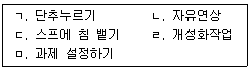
- ㄱ, ㄴ
- ㄷ, ㄹ
- ㄱ, ㄷ, ㅁ
- ㄴ, ㄹ, ㅁ
- ㄱ, ㄷ, ㄹ, ㅁ
(정답률: 50%)
91. 실존주의 상담에서 보는 인간의 궁극적 관심사를 모두 고른 것은?
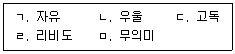
- ㄱ, ㄷ
- ㄱ, ㄴ, ㄹ
- ㄱ, ㄷ, ㅁ
- ㄴ, ㄷ, ㄹ
- ㄴ, ㄷ, ㄹ, ㅁ
(정답률: 알수없음)
92. 인간중심 상담자의 진솔성에 관한 설명으로 옳지 않은 것은?
- 자신의 경험과 자기를 일치시킬 수 있어야 한다.
- 자신을 부정하지 않고 자기 자신으로 존재한다.
- 자신의 전문역할 뒤로 숨지 않는 것을 뜻한다.
- 자신의 능력을 과장하려는 유혹을 성찰하는 것이다.
- 자신의 느낌과 생각을 내담자에게 모두 표현하는 것을 의미한다.
(정답률: 34%)
93. 다음에 해당하는 게슈탈트 상담 기법은?
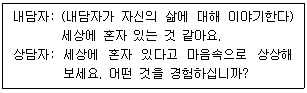
- 실험
- 꿈작업
- 바디스캔
- 험담 금지하기
- 상전과 하인
(정답률: 50%)
94. 다음 대화에 해당하는 교류분석의 유형은?
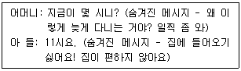
- 이면교류
- 교차교류
- 상보교류
- 각본교류
- 일방교류
(정답률: 42%)
95. 다음 설명에 해당하는 개념으로 옳은 것은?
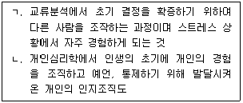
- ㄱ. 스트로크 ㄴ. 열등감
- ㄱ. 라켓감정 ㄴ. 생활양식
- ㄱ. 게임 ㄴ. 열등감
- ㄱ. 스트로크 ㄴ. 생활양식
- ㄱ. 인생태도 ㄴ. 우월의 추구
(정답률: 50%)
96. 실존주의 상담에 관한 설명으로 옳은 것을 모두 고른 것은?
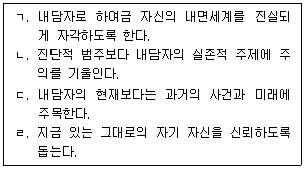
- ㄱ, ㄷ
- ㄴ, ㄹ
- ㄱ, ㄴ, ㄷ
- ㄱ, ㄴ, ㄹ
- ㄴ, ㄷ, ㄹ
(정답률: 50%)
97. 다음 사례의 청소년 내담자가 사용한 방어기제는?
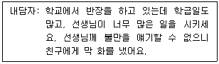
- 부정(denial)
- 투사(projection)
- 퇴행(regression)
- 치환(displacement)
- 반동형성(reaction formation)
(정답률: 34%)
98. 청소년상담자의 자질로 옳지 않은 것은?
- 완벽주의
- 자기성찰 능력
- 변화에 대한 신뢰
- 감정인식 및 수용력
- 인간에 대한 호기심과 관심
(정답률: 59%)
99. 상담자의 비윤리적 행동에 해당하는 것을 모두 고른 것은?
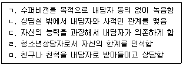
- ㄱ, ㄷ
- ㄴ, ㄹ, ㅁ
- ㄱ, ㄴ, ㄷ, ㅁ
- ㄴ, ㄷ, ㄹ, ㅁ
- ㄱ, ㄴ, ㄷ, ㄹ, ㅁ
(정답률: 59%)
100. 다음 사례에서 상담자가 선택한 이론과 기법의 연결이 옳은 것은?
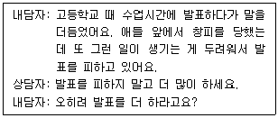
- 정신분석 – 통찰
- 게슈탈트 상담 – 해석
- 교류분석 – 게임
- 인간중심 상담 – 수용
- 실존주의 상담 - 역설적 의도
(정답률: 50%)